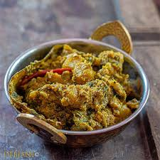

🥕 Labra (Bengali Mixed Vegetable Curry)

Ingredients
- 1 potato (peeled and cubed)
- 1 carrot (sliced)
- 1 eggplant (cubed)
- 1/2 cup pumpkin (cubed)
- 1/2 cup green beans (chopped)
- 1/2 cup cauliflower florets
- 1/2 cup raw banana (cubed)
- 1 tsp ginger paste
- 1 tsp cumin seeds
- 1/2 tsp turmeric powder
- 1/2 tsp cumin powder
- 1/2 tsp garam masala
- Salt to taste
- 2 tbsp mustard oil
- 2 dried red chilies
- 1/2 tsp sugar (optional)
- 1/2 cup water (adjust as needed)
Instructions
- Heat mustard oil in a pot. Add cumin seeds and dried red chilies. Let them splutter.
- Add ginger paste and sauté until fragrant.
- Add the mixed vegetables and stir well to coat with the spices.
- Sprinkle turmeric powder, cumin powder, garam masala, and salt. Stir to combine.
- Add water and cook on low heat until vegetables are tender, and the curry thickens.
- If using, add sugar to balance the flavors. Cook for a couple more minutes.
Serve With
- Steamed rice
- Roti
- Fried fish
💡 Tip: Use seasonal vegetables for the best flavors and texture.